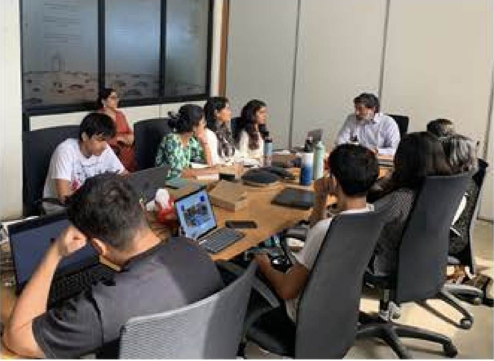

DASRA YPP Social Impact Internship (June 2024)
To learn more about social impact in India, Ishaan did a 2 week program with venture philanthropist fund DASRA, one of the largest in India. This equipped him with the broadened perspective to understand the challenges of rural farmers in India, as well as form valuable connections with grassroots NGO leaders all over India, from the North East (Assam) to the South (Tamil-Nadu).
